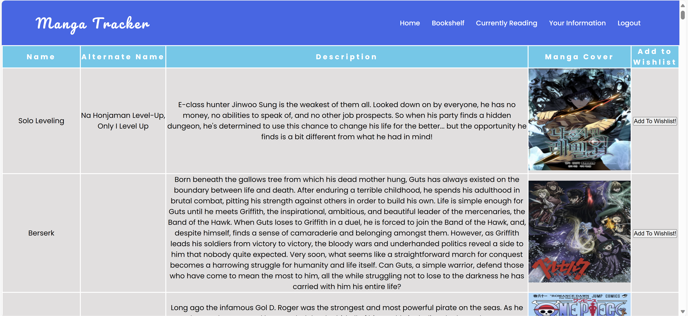
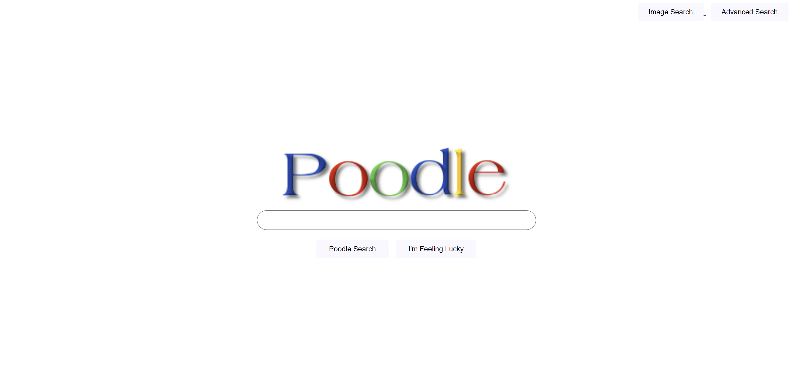

Project History Image
Manga-Tracker Application
- o Project using Java Spring Boot, Bootstrap, Thymeleaf HTML
- o Created an application which let users log in, add Manga to a personal user database, and remove Manga from their list.
Furthermore, division of control between administrators and users were created, where any admin user could remove any user using Role-Based action control, and a
full suite of JUnit tests were created to test functionality and server endpoints between the Model, View, Controller, and Data Layers of the application.

Google Clone
- o Project using HTML and CSS styling
- o Used HTML to create an interface through which one can utilize Google Search, Google Image Search, and Google Advanced Search features.
and also implemented a "I'm feeling Lucky" feature which redirects to the first search result.

Chrome Extension
- o Project using HTML, CSS, and Javascript
- o Used HTML, CSS and Javascript to create a Chrome extension, which implements a Pomodoro Timer, and a real-time clock.
Furthermore, you can customise your greeting on a double click, which saved in Chrome storage after modification.
Finally on every reload of the page, the background and the quote present on the page changes using API calls.